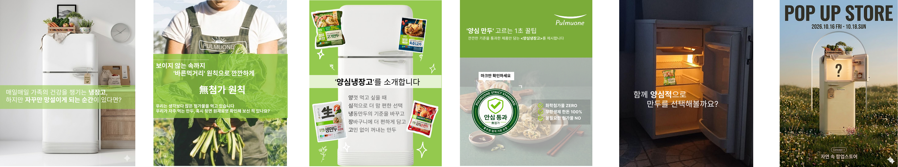

Starbucks UX Project
- 핵심 문제
- 스타벅스는 커스터마이징 경험이 강점인 브랜드이지만, 복잡한 UX와 선택 피로로 인해 개인화 경험까지 도달하지 못함
- 핵심 인사이트
- 선택지가 많아서가 아닌, 선택 과정이 복잡해서 이탈이 발생
- 해결 전략
- 추천 기반 UX 구조 재설계. Care > Lab > Custom 경험 유도
- 역할
- 리뷰 기반 사용자 행동 분석, 콘텐츠 기획 및 제작, UX 기획
Marketing Portfolio
Featured
Projects
풀무원 프로젝트 관련 제작물


Creative Works

앱 진입 전환을 유도하는 비즈보드형 광고 배너

혜택별 메시지 구조를 적용한 브랜드 메시지 소재

스타더스트 혜택을 강조한 알림톡형 메시지 소재

타깃별 메시지 기반 카카오톡 채널 광고 소재 제작